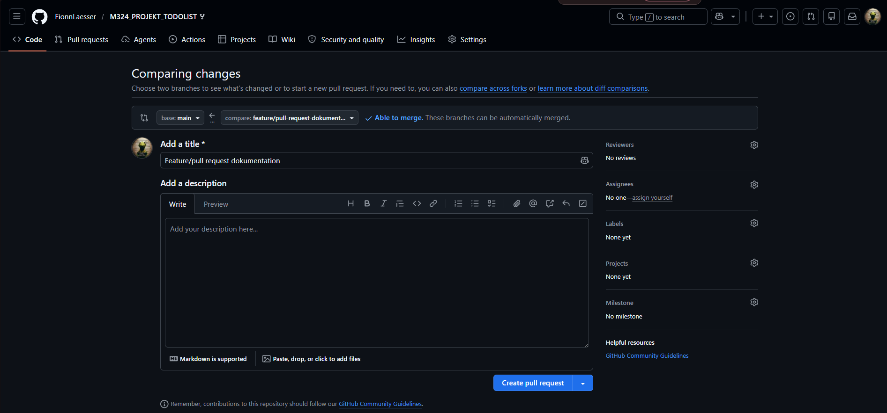
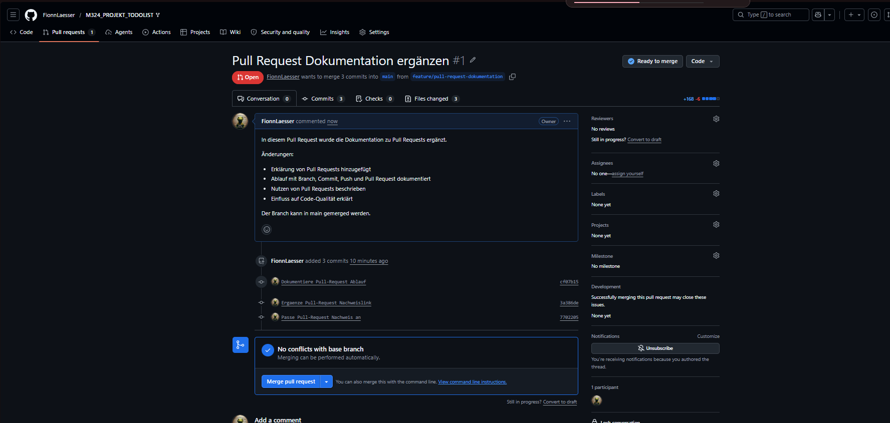
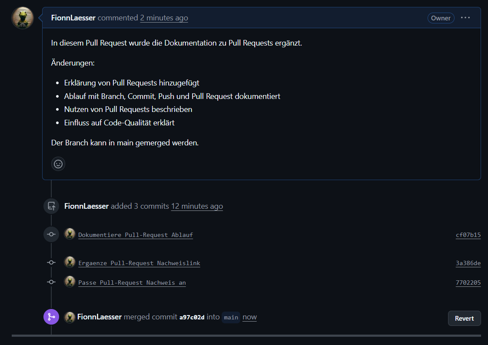
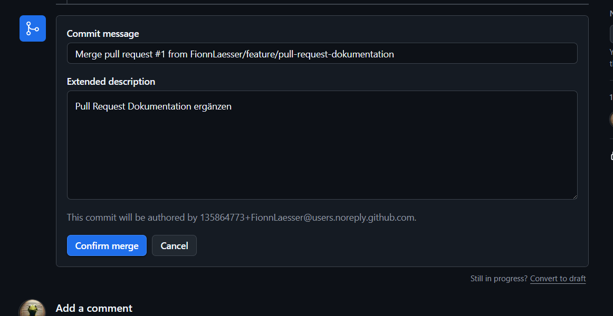

Stand: 22.05.2026
Repository URL: https://github.com/FionnLaesser/M324_PROJEKT_TODOLIST
Ein Pull Request ist eine Anfrage, Änderungen aus einem Branch in einen anderen
Branch zu übernehmen. In unserem Projekt wird dafür ein Feature-Branch verwendet,
der später in den main-Branch gemerged wird.
Bei GitLab heisst das gleiche Prinzip meistens Merge Request. Die Bedeutung ist gleich: Änderungen werden zuerst separat vorbereitet und danach überprüft, bevor sie in den Hauptstand des Projekts übernommen werden.
Pull Requests helfen dabei, Änderungen kontrolliert in ein Projekt zu übernehmen. Sie sind besonders nützlich, wenn mehrere Personen am gleichen Projekt arbeiten.
main kommen.main-Branch bleibt stabiler.Vor dem Erstellen eines Pull Requests wird zuerst ein eigener Branch erstellt.
Dieser Branch enthält die Änderungen, die später in main übernommen werden
sollen.
Wichtige Git-Befehle:
git checkout main
git pull origin main
git checkout -b feature/todo-validation
git status
git add .
git commit -m "Verhindere leere Todos"
git push origin feature/todo-validation
In unserem Projekt wurde für die echte Änderung der Branch feature/todo-validation
verwendet. Die Änderungen wurden dort vorbereitet und anschliessend auf GitHub
hochgeladen.
Für die notenrelevante Pull-Request-Bewertung wurde eine kleine echte Änderung an der Todo-Liste umgesetzt.
Problem:
Leere Todos sollen nicht erstellt werden. Das gilt auch dann, wenn im Eingabefeld nur Leerzeichen stehen.
Umsetzung:
Absenden deaktiviert, solange die Eingabe leer ist.Geänderte Dateien:
| Datei | Änderung |
|---|---|
frontend/src/App.jsx |
Deaktiviert den Absenden-Button bei leerer Eingabe. |
backend/src/main/java/com/example/demo/DemoApplication.java |
Verhindert leere Todo-Einträge auch direkt über die API. |
backend/src/test/java/com/example/demo/DemoApplicationTests.java |
Ergänzt einen Test für leere Todo-Beschreibungen. |
Nach dem Push des Feature-Branches kann auf GitHub ein Pull Request erstellt werden. Dabei wird ausgewählt, von welchem Branch in welchen Zielbranch gemerged werden soll.
Für dieses Projekt war die Auswahl:
mainfeature/todo-validationDanach wurden ein Titel und eine Beschreibung ergänzt. Die Beschreibung sollte kurz erklären, was geändert wurde und warum diese Änderung gemacht wurde.

Nach dem Erstellen des Pull Requests zeigt GitHub an, ob die Änderungen gemerged werden können. Wichtig ist, dass keine Merge-Konflikte vorhanden sind.
In unserem Fall zeigte GitHub den Status Ready to merge. Ausserdem wurde
angezeigt, dass keine Konflikte mit dem Base-Branch vorhanden waren. Damit war
der Pull Request technisch bereit für den Merge.

Wenn der Pull Request überprüft wurde und keine Konflikte vorhanden sind, kann er
in den main-Branch gemerged werden. Dafür wird auf GitHub zuerst die Schaltfläche
Merge pull request verwendet.
Anschliessend muss der Merge nochmals bestätigt werden. Dieser Schritt verhindert,
dass Änderungen versehentlich in main übernommen werden.

Nach der Bestätigung zeigt GitHub an, dass der Pull Request erfolgreich gemerged
wurde. Die Änderungen sind damit im main-Branch enthalten.

Die folgenden Screenshots dokumentieren den Ablauf des Pull Requests.
| Datei | Zweck | Status |
|---|---|---|
01_pr_problem_keine_rechte.png |
Zeigt, dass zuerst kein Pull Request ins WISS-GB Repository erstellt werden konnte, weil nur Collaborators berechtigt waren. | TODO: Screenshot 01_pr_problem_keine_rechte.png einfügen |
02_pr_erstellen_formular.png |
Zeigt das Formular zum Erstellen des Pull Requests mit Titel und Beschreibung. | Vorhanden |
03_pr_offen_ready_to_merge.png |
Zeigt den geöffneten Pull Request mit Status ready to merge und ohne Konflikte. | Vorhanden |
04_pr_confirm_merge.png |
Zeigt den Schritt Confirm merge. | Vorhanden |
05_pr_erfolgreich_gemerged.png |
Zeigt, dass der Pull Request erfolgreich in main gemerged wurde. |
Vorhanden |
TODO: Screenshot 01_pr_problem_keine_rechte.png einfügen, sobald der passende
Screenshot vorhanden ist.
Die folgenden Abschnitte dokumentieren die notenrelevante Pull-Request-Arbeit zur
Todo-Validierung. Es werden nur Bilder verwendet, die einen echten Arbeitsschritt
zeigen. Es wird kein Screenshot verwendet, der die Meldung There isn't anything to compare enthält.
Für die Änderung wurde ein Issue erstellt. Das Issue beschreibt, dass leere Todos verhindert werden sollen und nennt die wichtigsten Akzeptanzkriterien.
Für die Umsetzung wurde ein eigener Branch erstellt. Der Branch heisst
feature/todo-validation und trennt die Änderung vom main-Branch.

Die Code-Änderung verhindert, dass leere Todo-Beschreibungen gespeichert werden.
Dabei wird geprüft, ob die Beschreibung null, leer oder nur aus Leerzeichen
besteht.

Der Commit enthält den Bezug zum Issue mit closes #2. Dadurch kann GitHub das
Issue nach dem Merge automatisch schliessen.

Der Pull Request wurde von feature/todo-validation nach main erstellt. Der
Screenshot zeigt, dass GitHub echte Unterschiede erkennt und der Branch gemerged
werden kann.

Für das Review wurde eine andere Person als Reviewer eingetragen. Dadurch wird sichtbar, dass die Änderung nicht nur allein umgesetzt, sondern auch im Team angeschaut wurde.

Das Review wurde im Pull Request dokumentiert. Der Kommentar bestätigt, dass die Änderung nachvollziehbar ist, das Issue erfüllt und keine Konflikte vorhanden sind.

Der Pull Request war bereit zum Merge. GitHub zeigte keine Konflikte mit dem Base-Branch an. Damit konnte der Pull Request durchgeführt werden.

Der Pull Request wurde online auf GitHub in den main-Branch gemerged. Damit
wurden die Änderungen aus dem Feature-Branch in den Hauptstand übernommen.

Nach dem Merge wurde das Issue automatisch geschlossen, weil der Commit oder Pull
Request den Hinweis closes #2 enthielt.

Nach dem Online-Merge wurde lokal main aktualisiert. Der vorhandene Screenshot
zeigt den Pull-Vorgang und den dabei sichtbaren lokalen Konfliktstand. Dieser
Konflikt muss lokal bereinigt werden, bevor der Arbeitsstand vollständig sauber
ist.

Pull Requests erleichtern die Zusammenarbeit, weil Änderungen nicht direkt in den
main-Branch geschrieben werden. Stattdessen werden sie zuerst in einem eigenen
Branch gesammelt und danach überprüft.
Ein grosser Vorteil ist, dass andere Personen den Code anschauen können, bevor er übernommen wird. Dadurch können Fehler, unklare Stellen oder fehlende Tests früher gefunden werden. Auch die Beschreibung im Pull Request hilft, die Änderung später nachzuvollziehen.
Pull Requests können aber auch zusätzlichen Aufwand verursachen. Für sehr kleine Änderungen dauert der Ablauf manchmal länger als ein direkter Commit. Ausserdem kann ein Pull Request blockiert werden, wenn Reviews fehlen oder wenn es Merge-Konflikte gibt.
Trotzdem ist der Nutzen für ein Teamprojekt grösser als der Aufwand. Pull Requests
verbessern die Code-Qualität, machen Änderungen transparenter und schützen den
main-Branch vor fehlerhaften oder unvollständigen Änderungen.
In diesem Projekt wurde ein Feature-Branch erstellt, die Dokumentation zu Pull
Requests ergänzt und der Branch über einen Pull Request in main gemerged. Die
Screenshots zeigen die wichtigsten Schritte: Pull Request erstellen, Status prüfen,
Merge bestätigen und erfolgreichen Merge kontrollieren.